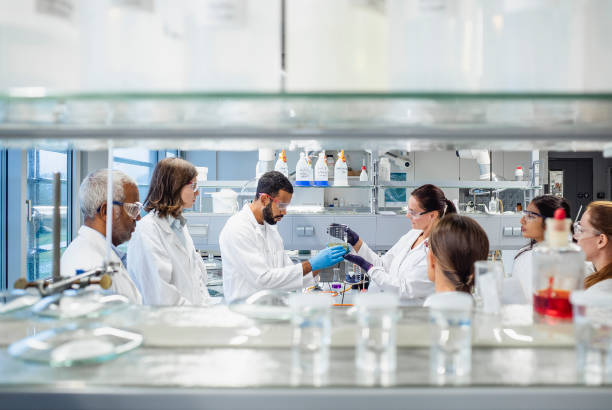

Explorăm Lumea științei!
Știința ne ajută să înțelegem lumea în care trăim, de la microcosmosul atomilor până la vastitatea universului. În această secțiune, vei descoperi articole și resurse care explică descoperirile științifice și aplicabilitatea lor în viața de zi cu zi. De asemenea, vei învăța despre diverse ramuri ale științei precum fizica, chimia, biologia și astronomie. Explorând această pagină, vei putea înțelege cum știința influențează evoluția tehnologică și progresele în medicină, iar resursele educaționale te vor ajuta să aprofundezi aceste domenii fascinante.
